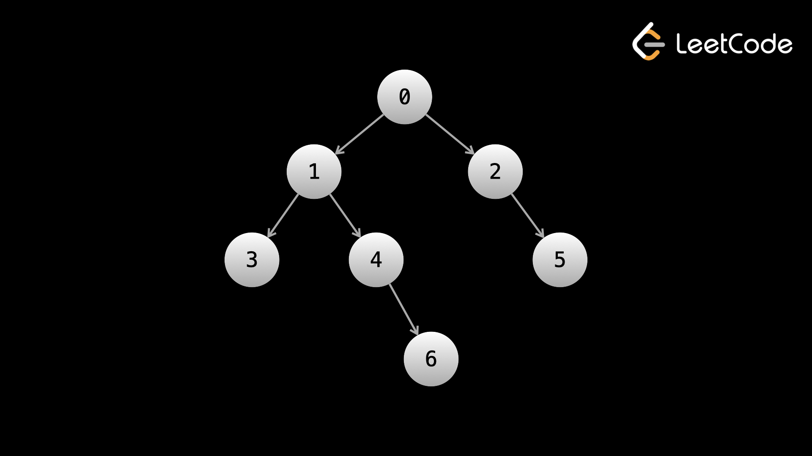

Перед началом этого раздела, пожалуйста будьте уверены что Вы полностью понимаете, что такое Бинарное дерево и как оно описывается в коде, а также глубоко понимаете рекурсию.
В этой статье мы поговорим о том, как обходить бинарные деревья. Обход дерева - это то, как мы получаем доступ к элементам дерева, и таким образом это важнейшая часть для решения проблем, связанных с бинарными деревьями
Вспомним, что в главе, посвященной Linked Lists, мы обходили связанные списки используя следующий код:
ans = 0
while head:
ans += head.val
head = head.next
return ans
Код выше начинает работу от head и посещает каждый узел для нахождения суммы всех значений в связанном списке
Для каждой ноды есть момент, когда переменная head ссылается на узел. Мы ссылаемся на узел с помощью аттрибута .next
В обходе бинарного дерева используется та же идея. Мы начинаем от root и обходим далее с помощью дочерних указателей .left и .right. Когда мы обходим связанные списки, мы делаем это итеративно (перебором). С бинарными деревьями мы обычно используем рекурсию.
Есть два основных типа обхода дерева. Первый называется "Поиск в глубину" (DFS). Бинарные деревья имеют специфику в реализации поиска в глубину. Есть 3 пути реализации алгоритма - preorder, inorder, и postorder (не волнуйтесь, тип, который Вы выбираете редко имеет значение). Другой основной тип обхода деревьев - "Поиск в ширину" (BFS). Давайте начнем с рассмотрения DFS.
Напомним, что глубина узла - его расстояние от корня
В DFS у нас в приоритете пройти в глубину дерева в одном направлении так далеко, как это возможно (пока не достигнем листового узла), прежде чем рассматривать другие направления. Например, давайте возьмем левое направление, как приоритетное. Мы двигаемся исключительно через node.left, пока левое поддерево не будет полностью исследовано. Затем мы обходим правое поддерево.
Деревеья названы так потому, что напоминают реальные деревья. Можете представить, что пути бинарного дерева это ветви, растущие из корня. DFS просто выбирает ветвь и идет так глубоко, как это возможно. Как только ветвь будет полностью пройдена, алгоритм возвращается назад, пока не найдет другой неисследованный участок.
Из-за того, что нам нужно вернуться к дереву после достижения конца ветви, DFS обычно реализуется с помощью рекурсии, хотя это также можно иногда сделать итеративно, используя стэк. Вот простой пример рекурсии в DFS для посещения каждого узла:
Каждый вызов dfs(node) есть посещение этого узла. Как Вы можете увидеть в коде, мы посещаем левые дочерние узлы, затем посещаем правые дочерние
if node == None:
return
dfs(node.left)
dfs(node.right)
return
Хорошие новости в том, что структура реализации DFS очень схожа во всех задачах. Это выглядит следующим образом:
1. Описание базового случая (случаев). Обычно, пустое дерево (node = null) и есть базовый
случай
2. Реализуем логику для обработки текущего узла
3. Рекурсивно вызываем дочерний узел текущего узла
4. Возвращаем ответ
Как мы увидим через мгновение, шаги 2 и 3 могут происходить в разном порядке
Наиважнейшая для понимания вещь - когда дело доходит до решения задач двоичного дерева, каждый вызов функции решает и возвращает ответ на исходную задачу, как если бы текущий узел был входным. Логика, которая будет выполняться на каждом шаге (шаг 2), будет зависеть от задачи.
Мы упомянули, что есть три типа DFS. Каждый из трех типов отличается только порядком выполнения шагов 2/3
Давайте посмотрим на типы, используя следующее дерево в качестве обсуждаемого

В preorder обходе логика выполняется на текущем узле перед переходом к дочернему. Давайте скажем, что мы просто хотим вывести значение каждого узла в консоль. В этом случае, на любом заданном узле, мы печатаем значение текущего узла, затем рекурсивно вызываем левый дочерний узел, затем рекурсивно правый дочерний узел.
if not node:
return
print(node.val)
preorder_dfs(node.left)
preorder_dfs(node.right)
return
Запуская код выше на заданном дереве, мы бы увидели узлы, выведенные в следующем порядке: 0, 1, 3, 4, 6, 2, 5
Из-за того, что логика выполняется немедленно, в самом начале вызова каждой функции, preorder обрабатывает узлы в том же порядке, в котором происходят вызовы функции
Для inorder обхода мы сперва рекурсивно вызываем левый дочерний узел, затем выполняем логику на текущем узле, и затем рекурсивно вызываем правый дочерний узел. Это означает, что никакой логики выполняться не будет, пока мы не достигнем узла, у которого нет левых дочерних ветвей, поскольку вызов левых дочерних узлов имеет приоритет перед исполнением логики.
if not node:
return
inorder_dfs(node.left)
print(node.val)
inorder_dfs(node.right)
return
Запуская код выше на обсуждаемом дереве, мы увидим узлы, выведенные в следующем порядке: 3, 1, 4, 6, 0, 2, 5.
Обратите внимание, что для каждого узла значение не будет выведено, пока все значения в левом поддереве не будут выведены, а значения в его правом поддереве печатаются только после этого
В postorder обходе мы рекурсивно вызываем все дочерние узлы и затем выполняем логику на текущем узле. Это означает, что никакая логика не будет выполнена, пока мы не достигнем листового узла, так как вызов дочерних узлов имеет приоритет перед исполнением логики. В postorder обходе root это последний узел, где выполняется логика.
if not node:
return
postorder_dfs(node.left)
postorder_dfs(node.right)
print(node.val)
return
Запустив код выше на обсуждаемом дереве, мы бы увидели узлы, выведенные в следующем порядке: 3, 6, 4, 1, 5, 2, 0.
Обратите внимание, что для любого заданного узла в его правом поддереве не будет выведено, пока не будут выведены все значения в левом поддереве, и его собственное значение выводится только после этого
Имя каждого обхода описывает, в какой момент выполняется логика текущего узла
pre -> перед дочерним узлом
in -> в середине дочерних узлов
post -> после вызова дочерних узлов
Прежде чем начнем решать задачи, попробуйте поиграться с binary tree в интерактивном редакторе
class TreeNode:
def __init__(self, val):
self.val = val
self.left = None
self.right = None
"""
The following code builds a tree that looks like:
0
/ \
1 2
"""
root = TreeNode(0)
one = TreeNode(1)
two = TreeNode(2)
root.left = one
root.right = two
print(root.left.val)
print(root.right.val)
Если Вы переживаете о необходимости знать три разных типа DFS, не переживайте. Если Вы используете рекурсию (а Вы должны), тогда переключение между этими тремя типами является очень простым.
В большинстве задач, тип, использованный для реализиации DFS не важен, важно, чтоб все узлы были посещены. Знание разницы между тремя типами реализации хорошо больше для самознания.
Давайте рассмотрим несколько примеров задач с бинарным деревом, которые могут быть решены через DFS.
Пример 1: Максимальная глубина
бинарного дерева
Дан root бинарного дерева, найти длину длиннейшего пути от root к листовому узлу.
Давайте начнем с рекурсивного подхода. Когда мы думаем о реализации рекурсивной функции, лучшим началом будет определить базовый случай. Какая глубина пустого дерева (ноль узлов, root == null)? Глубина равна 0.
Обратите внимание: ранее мы говорили, что глубина root равна 0. Это обычное определение, но на специфичных задачах, глубина root может определяться как 1 (если спрашивается, сколько узлов находится на пути от root к листовому узлу), и нам необходимо включить root в этот путь, поэтому мы начинаем с 1.
Далее нам нужно думать об отношении текущего узла к дочернему. Задача поставлена так, что мы ищем путь от root к листовому узлу, что означает, что в текущем узле мы можем рассматривать только левое или правое поддерево, не оба. Если maxDepth(node.left) являет собой максимальную глубину левого поддерева, а maxDepth(node.right) - максимальную глубину правого поддерева, тогда мы должны взять наибольшее значение и прибавить 1 (потому что текущий узел представляет собой глубину в 1 элемент)
Для решения задачи бинарного дерева Вы должны думать рекурсивно
Root, данный Вам - есть бинарное дерево. Но дочерние узлы также являются бинарными деревьями. Дочерние этих дочерних также являются бинарными деревьями. Каждое поддерево узла является бинарным деревом.
Функция maxDepth(root), данная нам, берет бинарное дерево на вход, и возвращает нам максимальную глубину - мы должны это реализовать. Если Вы отдадите на вход пустое дерево, тогда должен вернуться 0 - так как нет узлов для формирования пути.
Иначе мы имеем непустое бинарное дерево root. Как указано в задаче, нам нужно найти "длину наидлиннейшего пути от root до листового узла". Так как путь должен начинаться с корня, тогда root будет определенно частью пути. Поэтому текущий узел прибавляет 1 к ответу. Теперь мы должны найти листовой узел.
Из-за того, как реализуется maxDepth, если мы вызовем maxDepth(root.left), мы должны получить "длину наидлиннейшего пути от левого дочернего узла до листового узла". Прекрасно! Каким бы этот путь не был, мы можем просто следовать ему, чтобы получить ответ 1 + maxDepth(root.left). Такая же логика применяется и к maxDepth(root.right). Мы должны выбрать максимальную длину между двумя дочерними.
Итак как это вообще работает в коде? Сначала мы вызываем maxDepth(root), где root - это реальный корень дерева. DFS будет двигаться вниз дерева, пока не достигнет листового узла. Листовой узел не имеет дочерних, поэтому оба вызова левого дочернего и правого дочернего будут отрабатывать базовый случай и вернут 0. Это означает, что вызов листового узла вернет нам 1 + max(0, 0) = 1.
Это имеет смысл - если Вы возьмете листовой узел и рассмотрите его как поддерево, тогда ответ для этого поддерева будет равен 1.
Когда мы вернем 1 от листового узла, мы возвращаемся к родителю этого листового узла. Если листовой узел был левым дочерним, у нас будет значение 1 для левого поддерева (который был тольком листом). Давайте скажем, что здесь нет правого поддерева, поэтому вызов правого поддерева вернет 0. Теперь ответ для родителя этого листового узла 1 + max(1, 0) = 2.
+1, который мы выполняем на каждом узле, идет вверх от листьев. Т.е. мы дошли до листового узла, и только затем начали прибавлять.
def maxDepth(root: Optional[TreeNode]) -> int:
if not root:
return 0
left = self.maxDepth(root.left)
right = self.maxDepth(root.right)
return max(left, right) + 1
Очень важный концепт касательно рекурсии состоит в том, что каждый вызов функции хранит свои собственные переменные. Из-за того, что мы вызываем функцию для каждого узла, это означает, что каждый узел имеет свои собственные уникальные значения left и right. Когда мы доберемся до узла со значением 6, на самом деле существуют 4 разных значения left одновременно.
Это так просто! Чтобы освоить рекурсивное мышление, потребуется некоторое время, но, надеюсь, с примерами в этом разделе Вы получите интуитивность, необходимую для быстрого решения задач бинарного дерева.
В примере выше мы выполняем postorder обход, потому что логика для текущего узла (в основном только возврат базового случая) выполняется после вызова функции. Все три типа DFS могут быть реализованы итеративно, но postorder и inorder более сложны для реализации, чем preorder (самый легкий). Как мы упоминали ранее, для большинства задач не важен тип DFS, так что мы рассмотрим итеративную реализацию preorder DFS.
Для итеративной реализации DFS нам нужно использовать стэк. У нас нет возвращаемых значений для хранения глубины, поэтому вместо этого нам будет нужно связать текущую глубину с каждым узлом в стэке.
Формат кода для итеративной реализации DFS также схож для большинства проблем, как Вы увидите в нескольких дальнейших примерах.
def maxDepth(root: Optional[TreeNode]) -> int:
if not root:
return 0
stack = [(root, 1)]
ans = 0
while stack:
node, depth = stack.pop()
ans = max(ans, depth)
if node.left:
stack.append((node.left, depth + 1))
if node.right:
stack.append((node.right, depth + 1))
return ans
Эта итеративная реализация может быть более интуитивной, если Вы не привыкли к рекурсии.
Мы просто ассоциируем каждый узел с его глубиной. Для заданного node с глубиной
depth
глубина дочернего узла будет depth + 1.
Формат для выполнения обхода со стэком - это то, что можно легко использовать в различных задачах.
Мы используем стэк и while loop до тех пор, пока стэк не опустеет. На каждой итерации while loop
мы обрабатываем один узел - это эквивалент вызову функции в рекурсивной реализации. Вся логика,
которая выполняется в функции, для выполняться в цикле while, включая обработку дочерних узлов,
которые мы также добавляем в стэк.
Временная сложность и объем памяти в вопросах дерева обычно проста. Временная сложность почти всегда O(n), где n - общее число узлов, потому что каждый узел посещается только раз, и на каждом узле обработка занимает O(1). Если на каждом узле будет выполнено более чем O(1) операций, скажем O(k), тогда временная сложность будет равна O(n * k).
В вопросы объема памяти даже если Вы используете рекурсию, вызовы по-прежнему размещаются в стэке вызовов, который считается дополнительным пространством. Самый большой стэк будет (для итеративного или рекурсивного) в любом случае будет зависеть от дерева. Для рекурсии в худшем случае это O(1), если дерево это просто прямая линия, то обычно верный ответ для объема памяти это O(n). Если дерево "полное" (все узлы имеют 0 или 2 дочерних и каждый уровень кроме последнего заполнен), тогда сложность определения памяти O(log n), но это в лучшем случае.
Важное замечание касательно итеративной реализации: в коде мы добавляем node.left перед node.right. Отсоединение от стэка удаляет последний добавленный эелемент, таким образом мы на самом деле посещаем сперва правое поддерево в коде выше. В рекурсивной реализации сначала мы посещаем левое поддерево. Эта разница не имеет значения в этой задаче, потому что единственное, что имеет значение, это то, что мы посещаем все узлы, независимо от порядка. Однако это хорошо - понимать, что когда мы перебираем итеративно, порядок противоположен рекурсивному перебору.
Пример 2: Сумма пути
Дан root бинарного дерева и числовое значение targetSum, вернуть
True,
если существует путь от корня к листовому узлу, сумма которого равна targetSum, иначе вернуть
False.
Первое - какая информация нам нужна на каждом вызове функции? Нам нужен текущий узел, но нужно ли нам что-то еще? Если мы также будем хранить целочисленное значение curr, которое представляет собой сумму узлов от корня до текущего узла, мы сможем сверить это значение с targetSum, когда дойдем до листового узла. Таким образом, давайте создадим дополнительную функцию dfs(node, curr), которая возвращает true, если есть путь, начинающийся от node и заканчивающийся на листовом узле с суммой, равной targetSum, если мы уже внесли curr в сумму.
Каким является базовый случай? Первое, если у нас пустое дерево, мы не найдем пути, так как нет узлов, поэтому возвращаем false. Если мы на листовом узле (который мы можем определить как узел, у которого нет дочерних узлов), тогда возвращаем (curr + node.val) == targetSum.
В противном случае, если мы не на листовом узле, мы продолжаем спускаться по левому или правому пути. Нам нужен только один путь, равный targetSum, поэтому возвращаем true, если он найден. Не забываем добавить значение текущего узла к curr.
Когда мы сталкиваемся с листовым узлом, нам нужно знать сумму значений от корня до листового узла. Мы используем добавочную переменную curr в нашей DFS функции для отслеживания этой суммы.
На любом узле мы наблюдаем следующее: все возможные пути, начинающиеся от корня и двигающиеся через дочерние текущего узла, должны также проходить через текущий узел.
Поэтому первое, что мы делаем после проверки базовых случаев, это выполняем curr += node.val. Поскольку каждый вызов имеет свою собственную версию curr, и мы выполняем это сложение на каждом узле, результат всегда будет точный.
Это позволяет нам легко проверить состояние, описанное в проблеме. Когда мы сталкиваемся с листовым узлом (который мы можем распознать как узел, не имеющий дочерних), мы проверяем (curr + node.val) == targetSum. Если да, мы return true.
Вызов dfs(node.left, curr) возвращает логическое значение, указывающее, существует ли путь, начинающийся с node.left и заканчивающийся на листовом узле с суммой targetSum, начиная с curr. Проще говоря, он говорит нам, можно ли найти ответ, используя левое поддерево. Та же логика применяется к dfs(node.right, curr).
Так как задача стоит в определении, существует ли любой подходящий путь, мы возвращаем true из вызова, если любой дочерний вызов возвращает true (мы используем логическое ИЛИ).
Поскольку мы используем ИЛИ, любое return true будет в конечном итоге распространяться до корня. Если базовый случай, описанный ранее (быть на листовом узле и (curr + node.val) == targetSum) выполнился, он вернет true и приведет к тому, что исходный вызов (к корню) также вернет true.
def hasPathSum(root: Optional[TreeNode], targetSum: int) -> bool:
def dfs(node, curr):
if not node:
return False
if node.left == None and node.right == None:
return (curr + node.val) == targetSum
curr += node.val
left = dfs(node.left, curr)
right = dfs(node.right, curr)
return left or right
return dfs(root, 0)
Вот итеративный подход (помните, что итеративный подход гораздно менее распространен и должен быть использован толькое если интервьюер попросит Вас об этом):
def hasPathSum(root: Optional[TreeNode], targetSum: int) -> bool:
if not root:
return False
stack = [(root, 0)]
while stack:
node, curr = stack.pop()
if node.left == None and node.right == None:
if (curr + node.val) == targetSum:
return True
curr += node.val
if node.left:
stack.append((node.left, curr))
if node.right:
stack.append((node.right, curr))
return False
И снова, скорость выполнения и занимаемая память равны O(n), где n - количество узлов в дереве, каждый узел посещается не более одного раза, и каждое посещение содержит постоянную работу. В худшем случае для памяти (прямая линия), стэк вызовов вырастет до количества узлов в дереве.
Пример 3: Количество хороших узлов
в бинарном дереве
Дан root бинарного дерева, найти количество хороших узлов. Хорошим узлом называется узел,
на пути к которому нет узлов со значением больше, чем у текущего узла.
И снова, давайте начнем размышлять об информации, которая нам понадобится на каждом вызове функции (кроме узла). На каждом узле мы хотим знать, является ли узел хорошим, и чтобы это понять, нам нужно знать наибольшее значение между корнем и текущим узлом. Давайте использовать переменную maxSoFar для хранения этого значения.
Затем мы можем иметь функцию dfs(node, maxSoFar), которая возвращает количество хороших узлов в поддереве, корнем которого является node, где хранится максимальное количество, встретившееся до этого момента - maxSoFar.
Каким будет базовый случай? Если у нас пустое дерево, тогда ответ будет 0, потому что в нем нет узлов.
Общее количество хороших узлов есть количество хороших узлов в левом поддереве + в правом поддереве + 1, если текущий узел является хорошим узлом. Если node.val >= maxSoFar, это означает, что текущий узел является хорошим. Затем нам также надо найти количество хороших узлов в левом и правом поддеревьях, что мы сможем сделать рекурсивными вызовами, обновляя при этом maxSoFar.
В предыдущем примере мы использовали аргумент curr для хранения текущей суммы пути. Мы наблюдали, что каждый вызов функции хранил свою версию curr.
Вспомните наблюдение, которое мы сделали в предыдущем примере: все возможные пути, начинающиеся от корня и двигающиеся через дочерние текущего узла должны пройти через текущий узел.
Это наблюдение подразумевает, что для любого заданного узла, путь которого начинается от корня и заканчивается в поддереве узла должен включать и узел. Поэтому мы должны обновить maxSoFar на значение node.val перед вызовом дочернего. Выполняя это обновление мы гарантируем, что maxSoFar будет точным на каждом узле.
У нас есть dfs(node, maxSoFar), возвращающий количество хороших узлов в поддереве, корнем которого является node, при этом maxSoFar является наибольшим значением, встретившимся до сих пор. Количество хороших узлов - это количество хороших узлов в левом поддереве плюс в правом поддереве. Мы легко можем найти их, вызвав dfs на node.left и node.right. Кроме того, если текущий узел является хорошим узлом, мы также прибавляем его. Мы можем проверить это, сравнивая node.val и maxSoFar.
def goodNodes(root: TreeNode) -> int:
def dfs(node, max_so_far):
if not node:
return 0
left = dfs(node.left, max(max_so_far, node.val))
right = dfs(node.right, max(max_so_far, node.val))
ans = left + right
if node.val >= max_so_far:
ans += 1
return ans
return dfs(root, float("-inf"))
Вот итеративный подход:
def goodNodes(root: TreeNode) -> int:
if not root:
return 0
stack = [(root, float("-inf"))]
ans = 0
while stack:
node, max_so_far = stack.pop()
if node.val >= max_so_far:
ans += 1
if node.left:
stack.append((node.left, max(max_so_far, node.val)))
if node.right:
stack.append((node.right, max(max_so_far, node.val)))
return ans
Время выполнения и объем памяти занимают O(n) по тем же причинам, что и предыдущие примеры.
Пример 4: Одинаковое дерево
Даны roots двух бинарных деревьев p и q, проверить, являются ли деревья
одинаковыми. Два бинарных дерева являются одинаковыми, если они структурно идентичны и узлы имеют
те же значения.
Задача очень хорошо демонстрирует рекурсивную природу бинарных деревьев.
Если p и q являются одинаковыми деревьями, тогда следующие правила являются
истинными:
1. p.val = q.val
2. p.left и q.left являются одинаковыми деревьями
3. p.right и q.right являются одинаковыми деревьями
Основная идея состоит в том, что если два любых дерева являются одинаковыми, тогда их поддеревьях также должны быть идентичны. Это дает нам рекурсивное определение задачи. Поскольку функция, которую мы пытаемся реализовать, должна сообщать нам, что если два дерева одинаковы, мы можем использовать саму функцию для ответа на условия 2 и 3.
Следующее условие может быть использовано для проверки, являются ли деревья p и q одинаковыми:
p.val == q.val && isSameTree(p.left, q.left) && isSameTree(p.right, q.right)
Теперь нам нужны базовые случаи, чтобы рекурсия в конечном итоге завершилась. Если p и q равны null, тогда мы можем return true, так как они оба технически одинаковые (пустые) деревья. Если либо p либо q является null, а другой нет, мы должны return false, поскольку они явно являются разными деревьями.
Хороший способ обдумать базовые случаи - это представить дерево только с одним узлом. Давайте скажем, что p и q являются одноузловыми деревьями с одинаковым значениям. Первая логическая проверка p.val == q.val проходит, теперь мы проверяем поддеревья. Из-за того, что узлы не имеют дочерних, оба вызова левого и правого поддеревьев отработают базовый случай и вернут true.
Это красота рекурсии - если Вы на корневом узле, левые и правые поддеревья могут иметь тысячи узлов. Процесс фактического прохождения через деревья будет включать в себя множество каскадных вызовов, но Вам не нужно об этом беспокоиться - Вы знаете, что базовый вызов даст Вам нужный ответ.
def isSameTree(p, q):
if p == None and q == None:
return True
if p == None or q == None:
return False
if p.val != q.val:
return False
left = isSameTree(p.left, q.left)
right = isSameTree(p.right, q.right)
return left and right
Вот итеративный подход. Обратите внимание, что мы используем один и тот же код для проверки случаев. Вместо возврата true во время обхода мы возвращаем false, если какое-либо условие нарушено, а затем возвращаем true в конце, если нам удалось пройти все дерево, не возвращая false.
def isSameTree(p, q):
stack = [(p, q)]
while stack:
p, q = stack.pop()
if p == None and q == None:
continue
if p == None or q == None:
return False
if p.val != q.val:
return False
stack.append((p.left, q.left))
stack.append((p.right, q.right))
return True
Опять же, асимптотическая сложность и время выполнения O(n), по тем же причинам, что и предудыщие примеры
Примечание: Если у Вас проблемы с пониманием следующей задачи и ее решения, не пугайтесь. Задача
должна была быть удалена из курса, поскольку она значительно сложнее, чем все рассмотренные ранее примеры.
Мы сохранили это на курсе только в качестве бонуса, поскольку это классическая проблема.
Бонусная задача: Cамый
низкий общий предок двоичного дерева
Дан root двоичного дерева и два узла p и q, которые находятся в
дереве,
вернуть наименьшего общего предка двух этих узлов. НОП - это самый нижний узел в дереве, который имеет
как p, так и q в качестве потомков (примечание: узел является потомком самого
себя).
Это классическая задача и немного сложнее, чем задачи, которые мы рассматривали. Опять же, мы хотим, чтобы наша рекурсивная функция возвращала ответ на вопрос. Какой базовый случай? Если у нас пустое дерево - НОП не существует - возвращаем null.
В противном случае, как мы можем определить, является ли узел НОП? Допустим, мы находимся в корне, тогда есть 3 возможных варианта.
1. Корневой узел это p или q. Ответ не может быть ниже корневого узла,
потому что тогда в нем будет отсутствовать корень (который является либо p либо q)
в качестве потомка
2. Один из p или q в левом поддереве, а второй в правом поддереве. Ответом должен
быть корень, потому что это точка соединения между двумя поддеревьями, и, следовательно, самый низкий узел,
который может иметь как p так и q в качестве потомков.
3. p и q в одном поддереве. В этом случае, корень не может быть ответом, потому
что
мы могли бы спуститься внутрь дерева и найти "нижний" узел.
Запомните: из-за рекурсивной природы деревьев мы можем перевести описанные случаи в алгоритм. Нам только нужно выяснить, как найти ответ в первом и третьем случаях.
В первом случае, если мы видим, что текущий узел это либо p либо q, нам вообще не нужно беспокоиться о поддеревьях, поскольку мы знаем, что в них не может быть ответа. Поэтому мы можем вернуть что-нибудь сразу же. В базовом случае мы возвращаем ноль. Таким образом, вызов поддерева возвращает ненулевое значение, только если одно из p или q находится в этом поддереве.
Тогда второй случай подразумевается, если оба вызова левого и правого поддеревьев что-то возвращают, а третий случай подразумевается, если только один из вызовов что-то возвращает.
def lowestCommonAncestor(root: 'TreeNode', p: 'TreeNode', q: 'TreeNode') -> 'TreeNode':
if not root:
return None
# first case
if root == p or root == q:
return root
left = self.lowestCommonAncestor(root.left, p, q)
right = self.lowestCommonAncestor(root.right, p, q)
# second case
if left and right:
return root
# third case
if left:
return left
return right
Этот алгоритм имеет обычную временную и пространственную сложность O(n) - каждый узел посещается не более одного раза и на каждом узле выполняется постоянная работа. Стек рекурсивных вызовов может использовать до O(n) пространства.